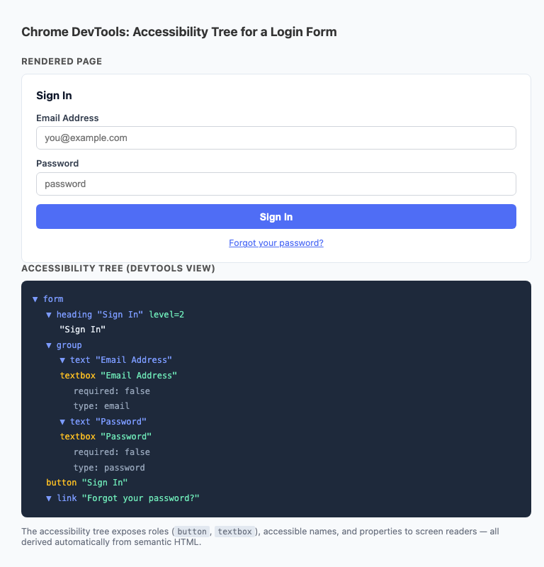
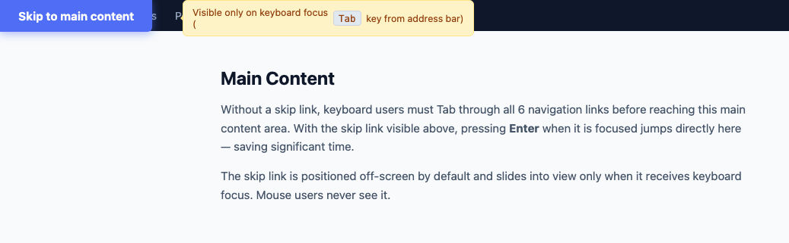
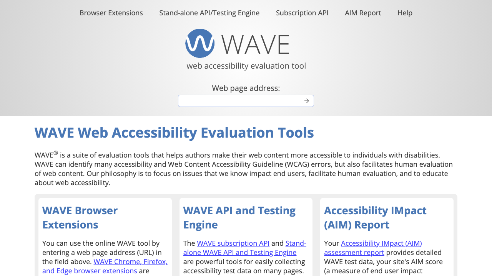
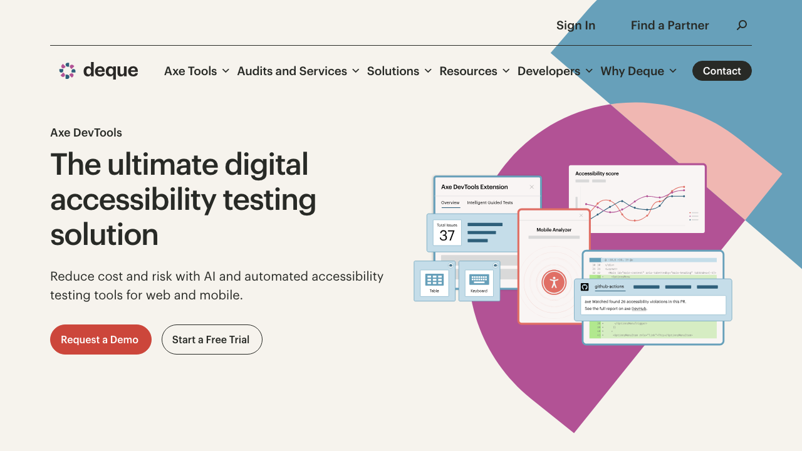

Lesson 17
Two ambitious topics that share the same root value:
clarity of intent expressed through clean code.
Part 1 — CSS
Part 2 — Accessibility
Lesson Overview
:has():is() & :where()@layerprefers-color-scheme & light-dark()@supports for progressive enhancement<dialog> and inertPart 1 — Modern CSS
Previously only possible with Sass/SCSS. Now natively supported in all modern browsers — no build step required. The & selector references the parent rule.
/* Selectors scattered everywhere */
.card { background: white; }
.card:hover { box-shadow: ...; }
.card .card-title { font-size: 1.25rem; }
.card .card-title:first-child { margin-top: 0; }
.card .card-body { padding: 1rem; }/* All card styles in one block */
.card {
background: white;
&:hover { box-shadow: ...; }
.card-title {
font-size: 1.25rem;
&:first-child { margin-top: 0; }
}
.card-body { padding: 1rem; }
}CSS Nesting — Syntax Reference
The core of nesting is the & selector — it always means "the current parent selector." Everything else is just combining & with the selectors you already know.
&| You write | Compiles to | Use for |
|---|---|---|
&:hover | .card:hover | Pseudo-classes |
&:first-child | .card:first-child | Structural pseudo-classes |
&::before | .card::before | Pseudo-elements |
&.active | .card.active | Same element + extra class |
&[disabled] | .card[disabled] | Attribute state |
& .title | .card .title | Descendant child |
.title | .card .title | Same — & implied |
& + p | .card + p | Adjacent sibling |
& ~ p | .card ~ p | General sibling |
.dark & | .dark .card | Theme / context parent |
@media (…) {…} | Scoped to .card | Responsive overrides |
@supports (…) {…} | Scoped to .card | Feature queries |
&? If you nest a plain class like .title with no &, the browser automatically reads it as & .title (descendant). But if you need a pseudo-class or modifier on the same element, & is required: &:hover not :hover..btn {
background: blue; /* own styles */
&:hover { opacity: .85; } /* pseudo-class */
&:focus-visible { /* keyboard focus */
outline: 3px solid blue;
}
&::after { /* pseudo-element */
content: " →";
}
&.active { /* same element + class */
background: darkblue;
}
&[disabled] { /* attribute state */
opacity: .4;
cursor: not-allowed;
}
.btn-label { /* descendant (& implied) */
font-weight: 700;
}
& + .btn { margin-left: .5rem; } /* adjacent sibling */
.dark-theme & { /* context parent */
background: #7c9bff;
}
@media (max-width: 480px) { /* nested media query */
width: 100%;
}
}Modern CSS — :has()
For decades, there was no way to style a parent based on its children. :has() changes that — supported in all modern browsers.
| Syntax form | What it selects | Example |
|---|---|---|
| A:has(B) | A that contains B | div:has(img) |
| A:has(B:state) | A that contains B in a state | .field:has(input:focus) |
| A:has(> B) | A with a direct child B | section:has(> h2) |
| A:has(B, C) | A that contains B or C | form:has(input, select) |
| A:not(:has(B)) | A that does not contain B | .sidebar:not(:has(li)) |
| A:has(B) C | Style C when A contains B | .field:has(input:focus) label |
/* Card with image: remove top padding */
.card:has(img) { padding-top: 0; }
/* Label highlights when input is focused */
.field:has(input:focus) label {
color: #4f6df5;
font-weight: 600;
}
/* Form shows error border */
form:has(:invalid) {
border: 2px solid #ef4444;
}
/* Hide empty sidebar */
.sidebar:not(:has(li)) {
display: none;
}
/* List items with sub-lists */
li:has(ul) { list-style-type: "▸ "; }Here is the HTML. The CSS selects the parent by checking what's inside it:
<!-- The PARENT we want to style -->
<div class="field">
<label>Email Address</label>
<input type="email">
</div>/* Before :has(): needed JavaScript to
add a class to .field on focus */
/* With :has(): pure CSS — no JS */
.field:has(input:focus) {
border-color: #4f6df5; /* parent changes */
}
.field:has(input:focus) label {
color: #4f6df5; /* sibling changes */
font-weight: 700;
}input:focus state and styles the parent .hf container and the label sibling. This was impossible in CSS before :has().CodePen — 17.1
Codepen 17.1 — :has() Selector in Practice
Modern CSS — :is() and :where()
:is() and :where()Both accept a list of selectors and match any element that fits at least one. They are identical except for specificity — which determines when to use which.
:is(header, main) :is(h1, h2, h3) { … }
→ "Any h1, h2, or h3 that lives inside a header or a main."
Read the outer :is() first (where), then the inner one (what).
:where(p, ul, ol) { margin: 1em; }
→ "Any p, ul, or ol — but this style has zero priority and any other rule beats it."
| Syntax form | Use | Specificity |
|---|---|---|
| :is(A, B) | Match A or B — shorthand for a selector list | Highest of A or B |
| :is(A, B) C | C inside A or B | Highest of A or B + C |
| :is(A):is(B) | Element that is both A and B | Sum of both |
| :where(A, B) | Same as :is() — but for base/reset styles |
Always 0 |
| :not(:is(A, B)) | Elements that are neither A nor B | Highest of A or B |
Before — 6 separate selectors
header h1, header h2, header h3,
main h1, main h2, main h3 {
color: #0f172a;
line-height: 1.2;
}After — 1 selector, same result
:is(header, main) :is(h1, h2, h3) {
color: #0f172a;
line-height: 1.2;
}Before — reset fights your own styles
/* specificity: (0,0,1) */
p, ul, ol, dl {
margin-block: 1em;
}
/* must match or beat (0,0,1) to win */
.prose p { margin-block: 1.5em; } ✓
p { margin-block: 0; } ✓
.no-gap { margin-block: 0; } ✗After — anything beats it
/* specificity: (0,0,0) — always loseable */
:where(p, ul, ol, dl) {
margin-block: 1em;
}
/* any selector now wins */
.no-gap { margin-block: 0; } ✓Modern CSS — @layer
@layerThe problem: You import Bootstrap. Both Bootstrap and you have a .btn rule. Bootstrap loads first — so when specificity ties, your rule loses. The only escape is writing longer, more specific selectors forever. @layer ends this by letting you declare a priority stack — layer position beats specificity.
Without @layer — the specificity war
@import url("bootstrap.css");
/* Bootstrap's .btn has specificity (0,1,0) */
/* Your rule — same specificity, Bootstrap loaded
first, so Bootstrap wins. Your green never shows. */
.btn { background: green; } /* ✗ loses */
/* Forced to escalate specificity to win: */
body .wrap .btn { background: green; } /* ✓ barely */
/* …next week Bootstrap updates. You lose again. */With @layer — you control the priority stack
/* Step 1: declare layer order (low → high priority) */
@layer vendor, base, components, utilities;
/* Step 2: put the library in the lowest layer */
@import url("bootstrap.css") layer(vendor);
/* Step 3: your styles go in a higher layer */
@layer components {
/* Wins — even with lower specificity than Bootstrap */
.btn { background: green; } /* ✓ always wins */
}
/* Unlayered styles beat everything layered */
.override { color: red; } /* ✓ beats all layers */@layer declaration = higher priority. Layer position overrides specificity entirely. Styles written outside any layer always beat everything inside a layer.CodePen — 17.2
Codepen 17.2 — CSS Cascade Layers
Modern CSS — Dark Mode
prefers-color-schemeWhy it matters: 82% of smartphone users prefer dark mode (Android Authority, 2023). Users with migraines, light sensitivity, or low-vision conditions depend on it. Dark mode is a WCAG-adjacent accessibility feature — ignoring it means ignoring a large segment of your users.
/* Light mode tokens */
:root {
--color-bg: #ffffff;
--color-surface: #f8f9fa;
--color-text: #0f172a;
--color-accent: #4f6df5;
}
/* Override tokens for dark mode */
@media (prefers-color-scheme: dark) {
:root {
--color-bg: #0f172a;
--color-surface: #1e293b;
--color-text: #f1f5f9;
--color-accent: #7c9bff;
}
}
/* Components use tokens — auto-switch */
body { background: var(--color-bg);
color: var(--color-text); }
.card { background: var(--color-surface); }Click to switch themes. In production this would read from the OS via prefers-color-scheme:
--color-bg), then every component uses those tokens. When the media query flips the token values, the entire site updates automatically — without touching any component code. One override location controls everything.data-theme="dark" on <html> and store preference in localStorage.Modern CSS — Color Functions
light-dark() & color-mix()Why these exist: light-dark() reduces dark mode from "define tokens in two places" to a single function call per property. color-mix() eliminates hard-coding hover states — instead of calculating a lighter version of your brand color manually, you describe the intent: "80% brand + 20% white."
/* Opt in — required on :root */
:root { color-scheme: light dark; }
/* light-dark(value-for-light, value-for-dark) */
body {
background: light-dark(#ffffff, #0f172a);
color: light-dark(#0f172a, #f1f5f9);
}color-scheme: light dark on :root.color-mix(in <color-space>, <color1> [pct%], <color2> [pct%])| Part | What it means |
|---|---|
in srgb | Color space — how colors are blended. srgb is standard web. oklch is perceptually uniform (better for gradients). |
color1 | Any CSS color — hex, rgb(), hsl(), named color, or custom property |
pct% (optional) | How much of color1 to use. Omit = browser calculates from color2's % |
color2 | The color to mix in |
pct% (optional) | How much of color2. If both omitted → 50/50 split |
/* Common recipes */
color-mix(in srgb, #4f6df5, white 20%) /* lighten */
color-mix(in srgb, #4f6df5, black 30%) /* darken */
color-mix(in srgb, #4f6df5, transparent 85%) /* tint/ghost */
color-mix(in srgb, blue, red) /* 50/50 blend */
color-mix(in oklch, blue, red) /* perceptual blend */background: color-mix(in srgb, #4f6df5, white 40%);color-mix() natively — no JS color math. Pick any color, choose what to mix with, and drag the slider.CodePen — 17.3
Codepen 17.3 — Dark Mode & Color Functions
Modern CSS — @supports
@supportsTests whether a browser supports a CSS property before applying a block. Enables progressive enhancement — working styles for all browsers, enhanced styles for modern ones.
display: grid with subgrid, but Safari just got support in 2023. Without @supports, you either drop the feature for everyone or accept broken layouts for older Safari users. With @supports, old browsers get a solid flexbox layout; modern browsers get the enhanced grid layout. Both work. No one sees broken CSS./* Basic layout — works everywhere */
.gallery { display: flex; flex-wrap: wrap; }
.gallery-item { flex: 1 1 200px; }
/* Enhance with Grid if supported */
@supports (display: grid) {
.gallery {
display: grid;
grid-template-columns:
repeat(auto-fill, minmax(200px, 1fr));
}
.gallery-item { flex: unset; }
}
/* Container queries if supported */
@supports (container-type: inline-size) {
.card-wrapper {
container-type: inline-size;
}
}
/* Glass effect if backdrop-filter works */
@supports (backdrop-filter: blur(8px)) {
.glass {
backdrop-filter: blur(8px);
background: rgba(255,255,255,0.3);
}
}@supports block with the enhanced version@supports not (display: grid) { }@supports (display: grid) and (gap: 1rem) { }CSS.supports("display", "grid") returns true or false. In Chrome DevTools Styles panel, rules inside an unmatched @supports block appear greyed out — a quick visual indicator that the feature wasn't supported.@supports to see which blocks matched. Unmatched blocks are greyed out in the Styles panel. You can also test CSS.supports("display", "grid") in the console — returns true or false.Part 2 — Web Accessibility
Accessibility means building websites that everyone can use — including people with disabilities. 1 in 4 Americans has some form of disability. If you build an app used by 1,000 people, you're locking out 250 of them when you skip accessibility. That's not a minor bug — that's a broken product.
In the US, the ADA applies to websites just like it applies to buildings needing ramps. Domino's Pizza was sued because a blind customer couldn't order online. Target, Netflix, and hundreds of other companies have faced lawsuits. Inaccessible websites cost real money in court.
Imagine building a store with a front door that only some people can open. You'd never do that in real life. A website that only works for some people is the digital version of that locked door. Accessibility is not extra credit — it's basic respect.
Closed captions were invented for deaf viewers — now everyone uses them in noisy coffee shops. Curb cuts were built for wheelchairs — now everyone uses them with strollers and bikes. Accessibility features almost always improve the experience for everyone. Plus, Google Search ranks accessible sites higher.
<!-- Can't Tab to it. Screen reader: "Place Order" — no role -->
<div onclick="submitOrder()">Place Order</div>
<!-- Screen reader reads filename: "pizza-2024-final.jpg" -->
<img src="pizza-2024-final.jpg">
<!-- Placeholder disappears. Screen reader says nothing useful -->
<input placeholder="Your address"><!-- Tab-focusable. Screen reader: "Place Order, button" ✓ -->
<button onclick="submitOrder()">Place Order</button>
<!-- Screen reader: "Large pepperoni pizza, image" ✓ -->
<img src="pizza.jpg" alt="Large pepperoni pizza">
<!-- Label stays visible. Screen reader: "Your address, edit text" ✓ -->
<label for="addr">Your address</label>
<input id="addr" type="text">Accessibility — WCAG
WCAG is the rulebook for web accessibility, written by the W3C (the people who define how the web works). Think of it like building codes for houses — specific rules that professionals are expected to follow. The current version is WCAG 2.2 (2023). Every rule fits into one of four principles called POUR:
<img src="dog.jpg"> <!-- ✗ blind user hears nothing -->
<img src="dog.jpg" alt="Golden retriever running"> <!-- ✓ --><div onclick="buy()">Buy</div> <!-- ✗ can't Tab to it -->
<button onclick="buy()">Buy</button> <!-- ✓ keyboard works --><input style="border:red"> <!-- ✗ what's wrong? -->
<input aria-describedby="err">
<p id="err">Enter a valid email</p> <!-- ✓ explains it --><div class="btn" role="button">Save</div> <!-- ✗ fragile -->
<button>Save</button> <!-- ✓ works in every AT, forever -->Accessibility — The Accessibility Tree
Your browser secretly builds two versions of every page. The first is the DOM — that's the one you see. The second is the Accessibility Tree — a parallel, stripped-down version that screen readers and assistive technology read from. It contains no colors, no fonts, no layout. Just: what is this element, what is it called, and what state is it in? Screen readers read the tree, not the screen.
<div class="nav">
<div onclick="go('/')">Home</div>
<div onclick="go('/shop')">Shop</div>
</div>
<!-- Screen reader announces:
"Home" ← just text, no role
"Shop" ← just text, no role
Can't Tab to either. No hint they're
clickable. A keyboard user is stuck. --><nav aria-label="Main">
<a href="/">Home</a>
<a href="/shop">Shop</a>
</nav>
<!-- Screen reader announces:
"Main, navigation" ← landmark found!
"Home, link" ← role + name
"Shop, link" ← role + name
Tab reaches both. User knows what
each item is and what it does. --><nav>, <button>, <a>, <h1>–<h6>, <label>. Each one automatically populates the accessibility tree with the right role and behavior. A <div> gives the tree nothing.| Property | What it means | Example |
|---|---|---|
| Role | What kind of thing is it? | "button", "link", "heading" |
| Name | What is it called? | "Submit", "Close dialog" |
| State | What condition is it in? | "checked", "expanded", "disabled" |
| Value | What does it contain? | "50%" for a slider |
<div> fills in none of them — the screen reader gets a blank entry with no useful information.
Accessibility — ARIA
Sometimes HTML doesn't have the right element for what you're building. There's no HTML element for a custom dropdown menu, a tab panel, or a live chat feed. ARIA is a set of attributes you add to your HTML to tell the browser: "this div is actually a menu button" or "this section just updated — announce it." Think of it like subtitles for your UI — the visual interface keeps playing, and ARIA writes the subtitle track that screen readers read aloud.
<button> is always better than <div role="button">. Native HTML elements come with keyboard behavior, focus, and semantics built in. An ARIA role on a div only labels it in the accessibility tree — it does not make it focusable, it doesn't respond to the keyboard, and it doesn't look any different. You'd have to add all of that yourself. Save ARIA for when HTML genuinely doesn't have what you need.<!-- BROKEN for keyboard + screen reader -->
<div class="btn" onclick="save()">
Save
</div>
<!-- Problems:
✗ Tab key skips it entirely
✗ Enter / Space don't trigger it
✗ Screen reader says: "Save"
(no role — user doesn't know
it's a button they can click)
✗ You'd have to add tabindex, keydown
listeners, and role="button" manually --><!-- Works for everyone, out of the box -->
<button onclick="save()">
Save
</button>
<!-- What you get free:
✓ Tab key focuses it
✓ Enter and Space activate it
✓ Screen reader says: "Save, button"
✓ Correct role in accessibility tree
✓ Disabled state with disabled attr -->HTML doesn't have every widget. When you build something custom, ARIA tells the browser what it is:
<!-- Custom tab interface — no HTML tab element -->
<div role="tablist">
<button role="tab" aria-selected="true"
aria-controls="panel1">Profile</button>
<button role="tab" aria-selected="false"
aria-controls="panel2">Settings</button>
</div>
<div role="tabpanel" id="panel1">...</div>
<!-- Screen reader: "Profile, tab, 1 of 2, selected"
"Settings, tab, 2 of 2" -->Accessibility — ARIA Roles & Labels
Why labels matter: Imagine calling a phone number and someone just picks up and says nothing. You don't know who you reached or what to do next. That's what a screen reader user hears when they land on an unlabeled icon button — the screen reader just says "button". Which button? What does it do? No idea. Add aria-label="Close dialog" and now the user hears "Close dialog, button" — suddenly it's clear. Labels are what turn a mystery into a usable interface.
Screen reader users press a single key to jump between page landmarks — like chapters in a book. These semantic elements create those landmarks automatically:
<header> <!-- "banner" landmark -->
<nav aria-label="Main"> <!-- "navigation" -->
<a href="/">Home</a>
</nav>
</header>
<main> <!-- "main" landmark -->
<aside> <!-- "complementary" -->
<h2>Related</h2>
</aside>
</main>
<footer> <!-- "contentinfo" landmark --></footer>
<!-- With these, a screen reader user can press
a key to jump straight to "main" — skipping
the header and nav entirely. --><!-- aria-label: button has no visible text -->
<button aria-label="Close dialog">✕</button>
<!-- Announces: "Close dialog, button" ✓ -->
<!-- Without it: "✕, button" or just "button" ✗ -->
<!-- aria-labelledby: reuse text already on page -->
<section aria-labelledby="cart-heading">
<h2 id="cart-heading">Your Cart</h2>
</section>
<!-- Announces: "Your Cart, region" ✓ -->
<!-- aria-describedby: extra hint after the name -->
<input type="password" aria-describedby="pw-hint">
<p id="pw-hint">Must be 8+ characters</p>
<!-- Announces: "Password, edit text,
Must be 8+ characters" ✓ -->
<!-- Two navs need labels to tell them apart -->
<nav aria-label="Main">...</nav>
<nav aria-label="Breadcrumb">...</nav>
<!-- Without labels both announce: "navigation" ✗ -->Accessibility — ARIA States
Why states matter: Imagine a door with no lock indicator — no red/green light, no padlock symbol, nothing. Every time you approach it, you'd have to try pulling the handle to find out if it's locked. That's the experience of a screen reader user on a page with no ARIA states. You click a "Menu" button and the menu opens — but the screen reader never announced that anything changed. Was it already open? Did the click work? Nobody knows. aria-expanded="true" is the green light that says: "yes, it opened."
<!-- aria-expanded: does the user know it opened? -->
<!-- ✗ Without aria-expanded -->
<button onclick="toggleMenu()">Menu ▼</button>
<!-- Screen reader: "Menu ▼, button"
User clicks. Menu opens visually.
Screen reader says NOTHING.
Did it open? Did it close? No idea. -->
<!-- ✓ With aria-expanded -->
<button aria-expanded="false"
aria-controls="mainMenu"
onclick="toggleMenu(this)">Menu ▼</button>
<ul id="mainMenu" hidden>...</ul>
<!-- Screen reader: "Menu ▼, collapsed, button"
User clicks. JS flips to true + removes hidden.
Screen reader: "Menu ▼, expanded, button" ✓ -->
<!-- Other common states -->
aria-checked="true" <!-- custom checkbox/toggle -->
aria-invalid="true" <!-- form field has an error -->
aria-disabled="true" <!-- item is not interactive -->
aria-current="page" <!-- active nav link -->
aria-hidden="true" <!-- hide from screen reader -->Click the button — watch the ARIA attribute update in real time:
ARIA stands for Accessible Rich Internet Applications. It adds semantic meaning to custom UI components that native HTML can't express — like a custom dropdown, tab panel, or combobox.
aria-expanded="false" in HTML and never toggling it is worse than not using it.
Accessibility — Focus Management
Try this right now: Go to any website and put your mouse on the other side of the desk. Use only Tab, Enter, and arrow keys. Can you navigate the site? Can you fill out the form? Can you click the buy button? If not — that site is broken for a huge group of people. Users with motor disabilities, tremors, or paralysis may not be able to use a mouse at all. The keyboard is their only way in. If your interactive element can't be reached with Tab, it simply doesn't exist for them.
The rule is simple: if you can click it, you must be able to Tab to it and press Enter to activate it. No exceptions.
<!-- tabindex="0": add a non-interactive element to tab order -->
<div role="button" tabindex="0" onclick="open()">Open</div>
<!-- Now Tab reaches it. But just use <button> instead! -->
<!-- tabindex="-1": focusable by JS only, not by Tab -->
<div id="modal" tabindex="-1">...</div>
<!-- Use when you need to move focus programmatically: -->
document.getElementById('modal').focus();
<!-- tabindex="1" or higher: NEVER do this -->
<button tabindex="3">...</button> <!-- ✗ breaks tab order -->Tab through these elements. Notice the focus ring appears only when using keyboard:
Accessibility — Focus Styles
:focus-visibleImagine playing a video game where the cursor turns invisible whenever you use a controller. Mouse players are fine. Controller players have no idea where they are on the screen. That's exactly what happens when developers write outline: none to remove the blue focus ring — mouse users never noticed it anyway, but keyboard users are completely lost. The fix is :focus-visible: it shows the focus ring only when the user is navigating by keyboard, and hides it for mouse users. Everyone wins.
Visible focus indicators are required by WCAG 2.4.7 (Level AA). Never write *:focus { outline: none } without providing an equally clear replacement.
/* Remove browser outline for mouse users */
:focus:not(:focus-visible) {
outline: none;
}
/* Clear focus ring for keyboard users */
:focus-visible {
outline: 3px solid #4f6df5;
outline-offset: 2px;
border-radius: 2px;
}
/* High-contrast mode support */
@media (forced-colors: active) {
:focus-visible {
outline: 3px solid ButtonText;
}
}:focus-visible fires only during keyboard navigation, not on mouse clicks — giving you control over when the ring appears without hurting mouse usability.These elements use :focus-visible. Click with mouse (no ring). Tab to them (ring appears):
Accessibility — inert Attribute
inert AttributeThe problem: focus leaks through modals. A popup opens — but keyboard users can still Tab to links and buttons hiding behind it that they can't even see. They end up triggering things in the background by accident. The inert attribute fixes this: add it to the background content when a modal opens, and everything inside becomes untouchable, unclickable, and invisible to screen readers.
<!-- Modal is open. But Tab still reaches these: -->
<main id="bg">
<a href="/about">About</a> <!-- ✗ Tab reaches it -->
<button>Delete account</button> <!-- ✗ Tab reaches it -->
<!-- User can trigger these without seeing them -->
</main><main id="bg" inert>
<a href="/about">About</a> <!-- ✓ Tab skips it -->
<button>Delete account</button> <!-- ✓ Tab skips it -->
<!-- Screen reader also skips everything inside -->
</main>
<dialog id="modal">
<!-- All Tab focus stays trapped in here -->
</dialog>const modal = document.getElementById('modal');
const content = document.getElementById('page-content');
const openBtn = document.getElementById('open-btn');
// Open: inert the background
openBtn.addEventListener('click', () => {
modal.showModal();
content.inert = true;
});
// Close: remove inert, return focus
modal.addEventListener('close', () => {
content.inert = false;
openBtn.focus(); // Return focus to trigger
});inert removes the need to set tabindex="-1" on every focusable child, toggle aria-hidden, and set pointer-events: none. One attribute replaces all of that.
Accessibility — Native <dialog>
<dialog> ElementBuilding a popup correctly is harder than it looks. Before the native <dialog> element, developers had to manually: trap Tab and Shift+Tab inside the popup, close it on Escape, move focus to the first item inside when it opened, return focus back to the button that opened it when it closed, add role="dialog" and aria-modal="true" so screen readers knew what it was, and prevent the page from scrolling in the background. Miss any one of those steps and keyboard or screen reader users get stuck. The native <dialog> element handles all of this automatically with a single method call: showModal().
<button id="openBtn">Delete photo</button>
<dialog id="myDialog">
<h2>Confirm Delete</h2>
<p>This cannot be undone.</p>
<button id="cancelBtn">Cancel</button>
<button id="deleteBtn">Delete</button>
</dialog>
<script>
const dialog = document.getElementById('myDialog');
document.getElementById('openBtn').addEventListener('click', () => {
dialog.showModal();
// Screen reader announces: "Confirm Delete, dialog"
// Focus moves to first element inside automatically
// Tab is now trapped inside — can't escape to background
});
document.getElementById('cancelBtn').addEventListener('click', () => {
dialog.close();
// Focus returns to #openBtn automatically
// Screen reader: back where the user started
});
</script><!-- Without <dialog>, you'd have to build all this: -->
// 1. Move focus into modal on open
firstFocusable.focus();
// 2. Trap Tab/Shift+Tab inside
modal.addEventListener('keydown', trapFocus);
// 3. Close on Escape
document.addEventListener('keydown', e =>
e.key === 'Escape' && modal.close());
// 4. Return focus to trigger on close
modal.addEventListener('close', () => openBtn.focus());
// 5. Add to accessibility tree
modal.setAttribute('role', 'dialog');
modal.setAttribute('aria-modal', 'true');
// showModal() does ALL of this in one line ↑CodePen — 17.4
Codepen 17.4 — Native <dialog> Element
Accessibility — Live Regions
aria-liveImagine ordering food delivery with your eyes closed. You submit the order, and 30 seconds later the page updates to say "Order confirmed! Arriving in 25 minutes." But nobody told you. You're still sitting there wondering if it worked. That's the experience of a blind user on most websites — content updates happen visually, but screen readers only announce things when focus moves. If focus doesn't move, the update is silent. aria-live fixes this by telling the browser: "watch this region — whenever the text inside it changes, read it aloud immediately, even if focus didn't move."
Use it for: form success/error messages, chat notifications, cart updates, loading states, search results — anywhere content updates without a page reload.
<!-- User submits a form. Success message appears. -->
<p id="msg"></p>
document.getElementById('msg').textContent
= 'Order confirmed!';
<!-- Screen reader says: NOTHING
Focus didn't move, so nothing was announced.
Blind user has no idea if the form worked. --><!-- Add aria-live to the region BEFORE updating it -->
<p id="msg" aria-live="polite"></p>
document.getElementById('msg').textContent
= 'Order confirmed! Arriving in 25 min.';
<!-- Screen reader says: "Order confirmed! Arriving in 25 min." ✓
Announced automatically when text changes. -->
<!-- For critical errors, use assertive (interrupts immediately) -->
<p role="alert">Card number is invalid.</p>
<!-- Screen reader interrupts whatever it's reading: "Card number is invalid" -->Click the buttons — a screen reader would announce the text that appears:
Accessibility — Skip Navigation
Imagine visiting ESPN every morning to check scores. ESPN's navigation has around 40 links before you reach the first headline. If you're using a keyboard, that's 40 Tab presses just to get to the content — every single page load, every single day. A skip link is the very first thing on the page. It's invisible to mouse users (it's off-screen until focused), but when a keyboard user presses Tab, it appears: "Skip to main content." Press Enter and they jump straight to the article, past all 40 nav links. One keypress instead of forty. WCAG 2.4.1 (Level A) requires this — it's one of the most impactful accessibility features you can add, and it takes about 10 lines of HTML and CSS.
<!-- First element in <body> -->
<a class="skip-link" href="#main">
Skip to main content
</a>
<header>...navigation...</header>
<main id="main" tabindex="-1">
<!-- Page content -->
</main>/* Hidden by default; visible on focus */
.skip-link {
position: absolute;
top: -100%;
left: 0;
background: #4f6df5;
color: white;
padding: 0.75rem 1.5rem;
font-weight: 600;
z-index: 9999;
transition: top 0.1s;
}
.skip-link:focus { top: 0; }Simulate what a keyboard user experiences:
Without the skip link, a keyboard user would Tab through all 6 nav items before reaching here.

Accessibility — Common Mistakes
The WebAIM Million report audits the top 1 million websites every year. In 2024, 95.9% of home pages had detectable WCAG failures. These eight mistakes cause the majority of them — and every one has a fast fix:
<img src="dog.jpg"> <!-- ✗ reads filename -->
<img src="dog.jpg" alt=""> <!-- ✓ decorative, skip -->
<img src="dog.jpg"
alt="Golden retriever puppy running on a beach"> <!-- ✓ -->color: #aaaaaa; /* on white bg — ratio 2.3:1 ✗ */
color: #767676; /* on white bg — ratio 4.5:1 ✓ */*:focus { outline: none; } /* ✗ keyboard users are blind */
/* ✓ style it instead */
:focus-visible {
outline: 3px solid #4f6df5;
outline-offset: 2px;
}<div onclick="buy()">Buy Now</div> <!-- ✗ can't Tab -->
<button onclick="buy()">Buy Now</button> <!-- ✓ -->
<span onclick="go('/home')">Home</span> <!-- ✗ -->
<a href="/home">Home</a> <!-- ✓ --><input placeholder="Email"> <!-- ✗ disappears on type -->
<label for="email">Email address</label>
<input id="email" type="email"> <!-- ✓ always visible --><!-- ✗ Custom div modal — focus leaks, Esc broken -->
<div class="modal">...</div>
<!-- ✓ Native dialog — focus trapped, Esc works free -->
<dialog id="modal">...</dialog>
document.getElementById('modal').showModal();<video autoplay src="..."></video> <!-- ✗ -->
<video src="..." controls></video> <!-- ✓ user controls it --><a href="/report">Read more</a> <!-- ✗ -->
<a href="/report">Download 2024 Annual Report (PDF)</a> <!-- ✓ -->Accessibility — Testing Tools
Think of accessibility testing like proofreading. Spell-check catches obvious typos instantly — but a human reader finds the sentences that are grammatically correct yet completely confusing. Automated tools are the spell-checker: fast, essential, but not the whole story.
alt="image" passes the automated test but is completely useless. Tools can't check whether the reading order makes sense, whether your form is confusing, or whether a screen reader announcement is jarring. That's why the last step is always testing with a real screen reader — you need to hear what your users hear.
WAVE — overlays errors & labels on the page

axe DevTools — detailed violation reports
Accessibility — Screen Readers
The most important test you can do takes 10 minutes: Turn on VoiceOver (Mac: ⌘F5), close your eyes, and try to use your own website. You'll hear your page read aloud — element by element, in order, with no visual context. This is the moment students realize: "Oh. That button with just an X icon just said 'button.' That's terrible." or "The form error message appeared but I had no idea because focus never moved to it." No automated tool reveals this. Only listening does.
Screen readers turn your visual design into an audio experience. If it sounds confusing, it is confusing — for millions of real users.
| Action | Keys |
|---|---|
| Turn on/off | ⌘F5 |
| Next item | ⌃⌥→ |
| Previous item | ⌃⌥← |
| Activate (click) | ⌃⌥Space |
| List all headings | ⌃⌥U then H |
| List all links | ⌃⌥U then L |
| Stop reading | ⌃ |
CodePen — 17.5
Codepen 17.5 — Accessibility Patterns in Action
Summary — Part 1
& selector. Works natively in all modern browsers — no Sass required. Nest media queries too.
:is() keeps specificity; :where() has zero specificity — perfect for base/reset styles.
prefers-color-scheme for the most flexible approach. light-dark() for concise single-line theming. color-mix() for dynamic tints.
@supports for browsers that support them.
Summary — Part 2
:focus-visible for visible indicators. Use inert to trap focus in modals.
Q & A — Part 1
& selector or a nesting selector to identify descendent rules. Some older Sass patterns work in native CSS now too. The main difference is that native CSS computes selectors slightly differently in edge cases involving specificity and combinators — but for everyday usage, the syntax and behavior are effectively the same.:is(h1, h2) has the specificity of h1. :where(h1, h2) has zero specificity. Use :where() in base/reset stylesheets where you want any specific selector to easily override the rule. Use :is() in component or utility styles where normal specificity behavior is expected.Q & A — Part 2
:root and overriding in a media query — is more explicit and controllable. You can also toggle dark mode via a class (useful for user-controlled theme switching). light-dark() is more concise and automatic but relies solely on the OS preference and is harder to override with a manual toggle. For most production sites, the custom properties approach is recommended.localStorage, then add data-theme="dark" to the <html> element. In CSS, define color tokens for both @media (prefers-color-scheme: dark) and [data-theme="dark"] — the manual class should come after so it wins. Critically: restore the preference from localStorage in a <script> tag in the <head> — before stylesheets load — to avoid a flash of the wrong theme on page load.